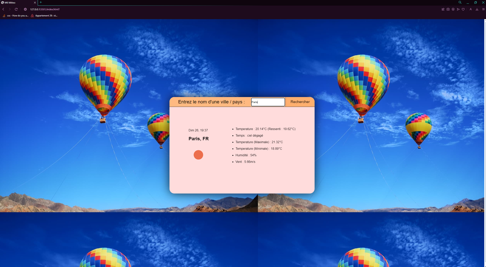
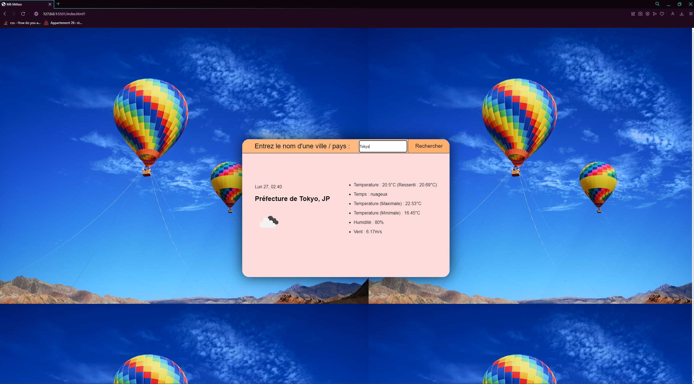
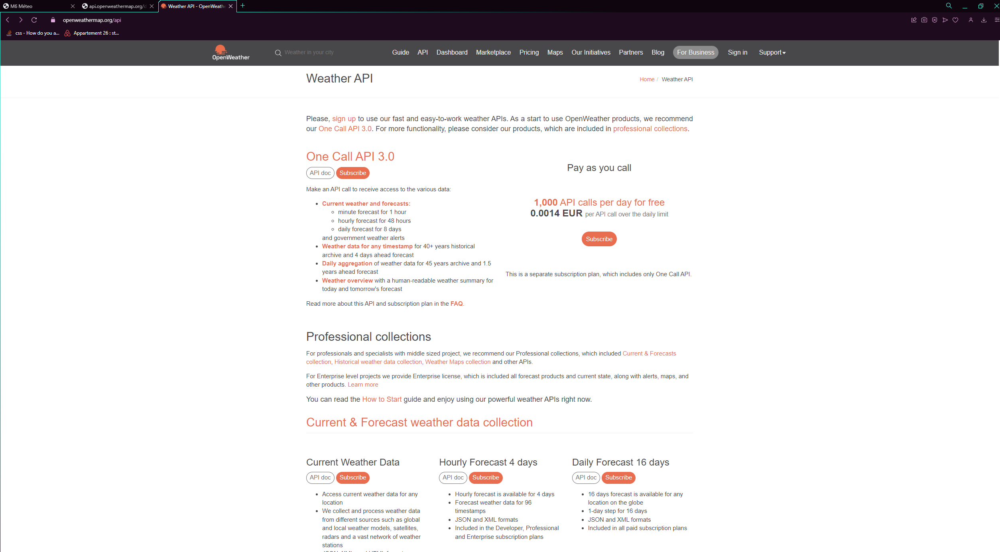
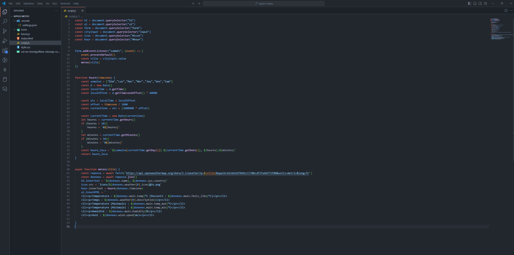

De Castro Hugo
Application météo
L'application météo à pour but de démontrer la météo dans une ville ou pays choisit. Cette application a été développé à l'aide du langage HTML, CSS et Javascript.
Voici son interface avec la ville de Paris de sélectionnée :

Voici son interface avec la ville de Tokyo de sélectionnée :

Des icones sont intégrés et différent en fonction de la météo.
Exemple : Paris = soleil et pour Tokyo=nuageux
Pour obtenir ces informations j'utilise une API publique de OpenWheater 
Qui est configuré en Javascript, en choisissant les informations dont je souhaite qui apparaissent 